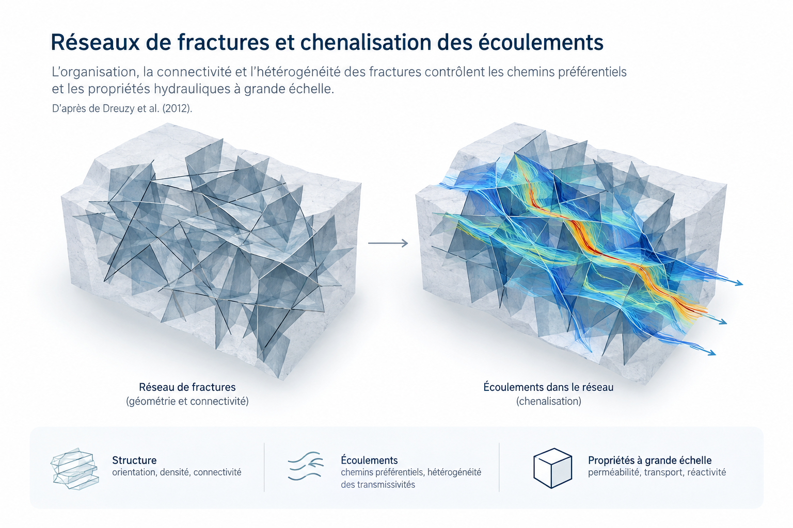

Une part importante de mes recherches antérieures a porté sur les écoulements et le transport dans les milieux poreux et fracturés fortement hétérogènes. L’objectif était de relier la géométrie des fractures, leur connectivité et la distribution de leurs propriétés aux comportements hydrauliques et de transport observés à plus grande échelle.
Ces travaux ont associé modélisation des réseaux de fractures, calcul intensif, changement d’échelle, transport réactif et échanges fracture–matrice. Ils ont conduit au développement de méthodes numériques robustes avec Inria et à des applications aux ressources en eau, au stockage géologique et aux réservoirs fracturés. Cette activité est aujourd’hui essentiellement passée, mais elle constitue un socle méthodologique important pour mes travaux actuels sur les aquifères peu profonds, la modélisation et les approches multi-fidélité.
